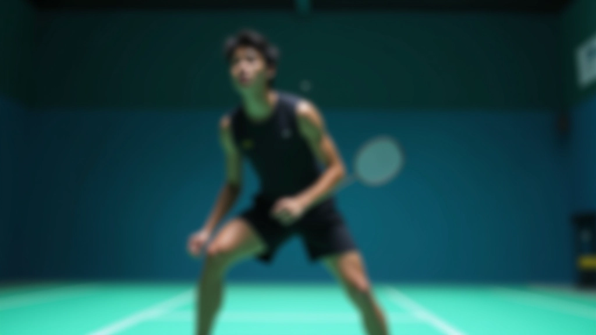
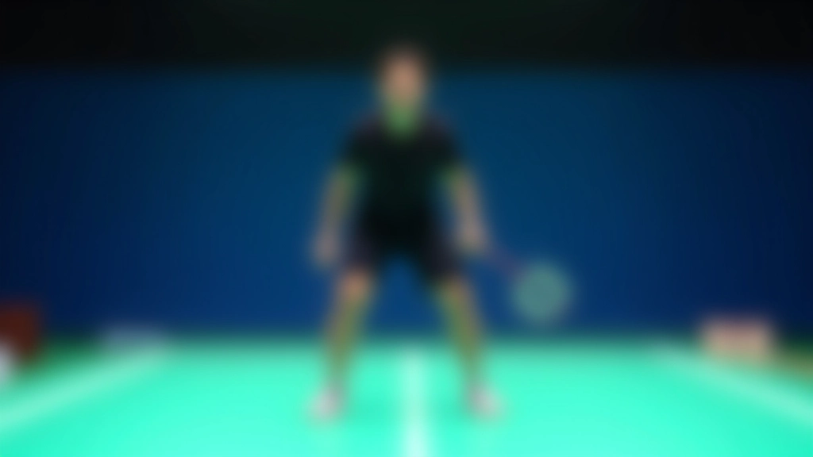
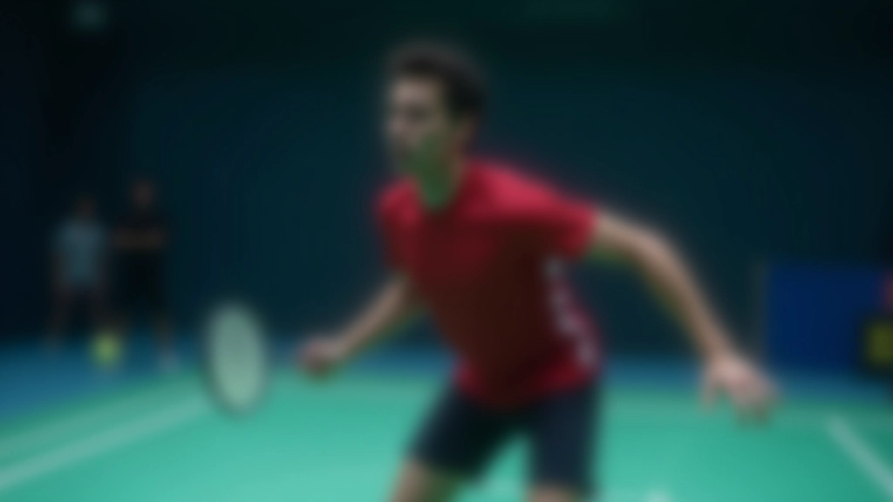
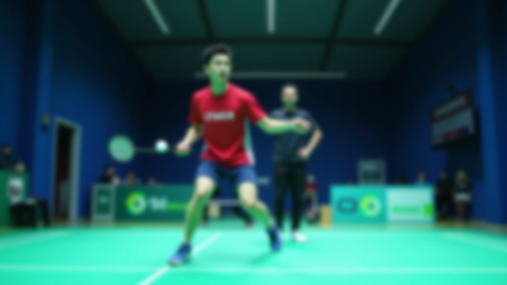

السيطرة على منتصف الملعب — المزايا الاستراتيجية
تعرف على كيفية التموضع في منتصف الملعب وكيف يمنحك هذا ميزة كبيرة على خصمك.
اقرأ المقالةتعلم الخطوات الأساسية التي تضعك في الموضع الصحيح قبل أن يضرب خصمك الكرة حتى

كل شيء في الريشة الطائرة يبدأ من الأرض. ليس من الذراع، ليس من المضرب — من قدميك. لاعبون كثيرون يركزون على قوة الضربة أو الدقة، لكنهم ينسون أن الوضعية الصحيحة تأتي أولاً. عندما تكون في المكان الصحيح في الوقت الصحيح، كل شيء آخر يصبح أسهل.
حركة القدمين الأساسية ليست معقدة. إنها مجرد أنماط متكررة تصبح طبيعية مع التدريب. بعد بضعة أسابيع من التمرين المنتظم، ستجد نفسك تتحرك بدون تفكير — جسمك يعرف ماذا يفعل.

الوضعية الأساسية تُسمى "الموقف المستعد". إليك كيفية القيام بها بشكل صحيح:
قف في منتصف الملعب، قليلاً نحو الخطوط الخلفية. قدماك يجب أن تكون بعرض أكتافك — ليس أقرب ولا أبعد. هذا المسافة تعطيك الثبات والمرونة في نفس الوقت.
اثنِ ركبتيك قليلاً — تقريباً ١٥ درجة. ليس عميق جداً. تخيل أنك تجلس على كرسي عالي جداً. هذا الموضع يعطيك السرعة للانطلاق في أي اتجاه.
وزنك يجب أن يكون على الكرات (مقدم القدم)، وليس على الكعب. هذا يسمح لك بالتحرك بسرعة. إذا كان وزنك على الكعب، ستكون بطيئاً جداً.


بعد أن تتقن الوضعية الأساسية، تحتاج إلى تعلم ثلاث حركات. هذه الحركات تغطي ٩٥% من الحالات في اللعبة. لا تحتاج إلى حركات معقدة — فقط هذه الثلاثة، مع التكرار المستمر.
عندما تحتاج إلى التحرك بسرعة إلى اليسار أو اليمين، استخدم الخطوة الجانبية. الخطوة الأولى تكون قصيرة وسريعة. ثم الخطوات التالية تتابع بسرعة. هذه الحركة توفر لك التوازن والسرعة معاً.
للتحرك للأمام نحو الشبكة، ابدأ بقدمك الأمامية. خطوة سريعة، ثم الخطوات التالية تتابع. لا تركض — امش بسرعة. الهدف هو الوصول إلى الكرة والبقاء متوازناً.
للتحرك للخلف، لا تركض للوراء مباشرة. أدر جسمك قليلاً وتحرك بخطوات جانبية. هذا يعطيك رؤية أفضل للكرة والشبكة. بعد ٢-٣ خطوات جانبية، يمكنك الركض للوراء إذا لزم الأمر.
هذه الإرشادات مخصصة للتعليم والتدريب فقط. كل لاعب يختلف عن الآخر — جسمك، طولك، قوتك كلها تؤثر على كيفية تحركك. إذا كان لديك مدرب، استشره حول تطبيق هذه التقنيات على احتياجاتك الخاصة. التدريب المنتظم والممارسة الصحيحة هي المفتاح للتحسن.
المعرفة وحدها ليست كافية. تحتاج إلى التدريب. في البداية، قد تشعر بأن حركات قدميك غير طبيعية — هذا طبيعي تماماً. دماغك يتعلم أنماط جديدة، وهذا يأخذ وقتاً.
ركز على الوضعية الأساسية. قف في الملعب، اثنِ ركبتيك، تحرك ببطء. لا تقلق من السرعة الآن. الهدف هو جعل جسمك يعتاد على الحركة.
أضف السرعة تدريجياً. تدرب على الحركات الثلاث — الجانبية والأمامية والخلفية. كرر كل حركة ١٠-١٥ مرات. استريح بين المجموعات.
ابدأ بالتحرك كرداً على أوامر. مدرب يقول "يمين"، تتحرك يميناً. هذا يعلمك أن تتفاعل بسرعة ويربط حركتك بالحالات الفعلية في اللعبة.

حركة القدمين الأساسية ليست مثيرة. لا توجد حركات دراماتيكية أو قفزات عالية. لكنها الأساس. كل لاعب جيد تراه يلعب بسرعة وثقة — هذا لأنهم أتقنوا حركة القدمين.
ابدأ اليوم. ستحتاج إلى ٤-٦ أسابيع من التدريب المنتظم لتصبح مريحاً مع الحركات الأساسية. لا تستعجل. كل يوم تدريب يجعلك أقرب إلى أن تصبح لاعباً حقيقياً. قدماك ستشكرك لاحقاً.
جاهز للمرحلة التالية؟ تعرف على السيطرة على منتصف الملعب والمزايا الاستراتيجية.
اقرأ المقالة التاليةاستمر في تعلم تكتيكات الملعب الفردي
تعرف على كيفية التموضع في منتصف الملعب وكيف يمنحك هذا ميزة كبيرة على خصمك.
اقرأ المقالة
اتقن الحركات الدفاعية السريعة وتعلم كيفية الانتقال من الدفاع إلى الهجوم بسلاسة.
اقرأ المقالة
تعلم كيفية التحرك بثقة من الشبكة وإنهاء النقاط بضربات حاسمة.
اقرأ المقالة